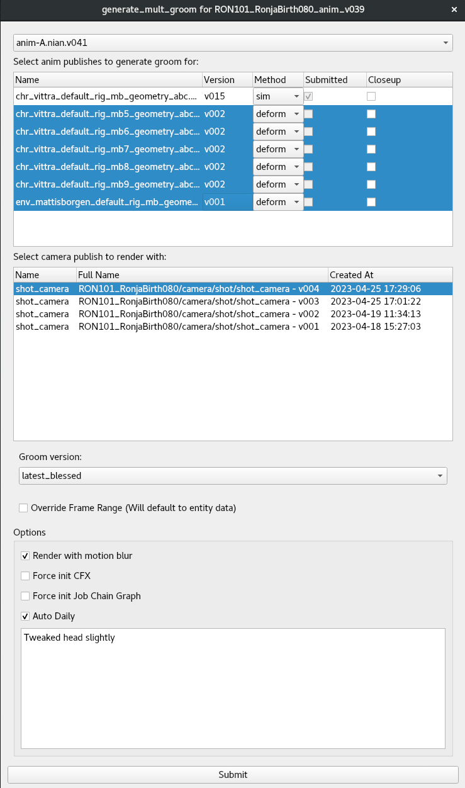
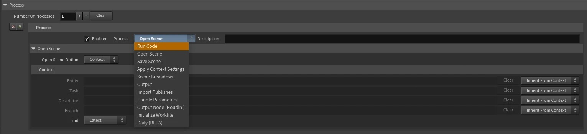

What it is
Overview
A Job Chain is a directed graph of nodes, where each node performs one or more processes in sequence. Authoring happens visually — chains are built as ROP networks inside Houdini, but the graph itself is DCC-agnostic and gets serialised to YAML at submission time. There is no Python required to build, modify or run a chain; artists wire nodes together and adjust parameters.
Each node runs against a context — typically a ShotGrid entity (a shot, an asset, a version). The context drives version resolution, publish paths, frame range, FPS, resolution and any other shot-derived parameters, so chains do not need hard-coded paths and the same chain definition works across hundreds of shots without modification.
Chains are built by wiring nodes in Houdini's ROP network. Each node is a step; connections define ordering and dependency. No code needed to author.
Every chain runs against a ShotGrid entity. Versions, paths and scene settings (FPS, frame range, resolution) resolve automatically from context.
Downstream nodes wait on upstream completion before starting — a lighting step won't begin until its CFX dependency has finished caching.
Nodes can declare conditional behaviour: skip if no input has updated, fall back to a template if no workfile exists, halt the chain with a message if a precondition fails.

System overview — node graph, submission flow and dependency model
Case study
Generate Groom — Ronja's Queen Harpy
The clearest illustration of what Job Chain made possible is a tool I built for Ronja's Queen Harpy called Generate Groom, now used on every CFX show at the studio.
For a creature this design-driven, animators needed to iterate against fully groomed, simulated, lit and comped renders — not bare anim playblasts. Historically that meant multi-week handoffs through CFX, Groom, Lighting and Comp. We needed it overnight.
Generate Groom is a single ShotGrid action animators trigger against any of their animation versions. Submit, choose options, walk away. Underneath, the chain runs end to end:

The chosen animation version is resolved from context and brought into the groom workfile.
Feather grooming runs against the deformed mesh. Closeup option swaps in higher-detail groom presets when needed.
Feather and muscle simulation runs. A bypass option swaps the dynamic sim for a simple deform when the secondaries are misbehaving on a shot.
Result is brought into a lighting scene with the show's light template applied, then rendered.
Renders are slap-comped in Nuke against the show's template comp, producing a reviewable image without manual setup.
Published to ShotGrid and marked for review. Animator submits in the evening, reviews in the morning.
When a shot had multiple creatures, the system handled them in one submission. Each character ran its own groom and simulation pass, then all of them were merged into a single lighting scene against the plate, lit and rendered together so the interactions read correctly, and slap-comped as one image. Some shots ran with up to fifty vittras in frame; the same submission handled them all. Animators iterated on creature interactions in context — not as separate single-character renders to be reassembled later.
It was the first time at the studio that the full CFX → Groom → Lighting → Comp loop had been authored as one automation. CFX iteration moved from a multi-department, multi-week handoff to something animators triggered themselves and reviewed the next morning. The cost of trying things dropped by an order of magnitude. Used on every CFX show since.
Authoring
Connection-based imports
The thing that makes Job Chain feel light to author is that connections are imports. Wire one node into the next and the downstream node picks up the upstream node's output automatically — no path, no context selector, no version pin. If a node's job is to bring its input into a scene, the input is whatever the node before it produced, full stop.
Each process plugin declares what it outputs as part of its abstract contract. A Sim step outputs a cache; an Output step outputs renders or geometry; a Save step outputs the saved workfile. Downstream nodes that consume an input — Import Publish, Merge Workfile, the slap-comp step, the daily — read the upstream output directly off the connection. The chain itself is the dependency graph.
In practice this means most of the chain is just wires. A groom file that needs the latest CFX cache doesn't ask which cache; it imports whatever the upstream sim node produced. A lighting node downstream of the groom doesn't reach into ShotGrid for the latest groom version; it imports the upstream groom node's output. A slap-comp node at the end of the chain doesn't need to know where the renders ended up; it picks them up from the render node it's wired to. Move a node, swap a node, branch off mid-chain — the dependencies follow the graph.
Explicit paths and version pins are still available for the cases where a chain genuinely needs to import something not produced upstream — a fixed published asset, a one-off external file. But for the canonical case of "this node's input is the previous node's output", the connection alone is enough.
A wire between two nodes carries the upstream output into the downstream node. No path, no context, no version selector — the connection is the dependency.
Each process plugin declares its output type as part of its abstract contract. Sims output caches; outputs output renders; saves output workfiles. Downstream nodes pick the right one off the connection.
Most of a chain is just wires. Move a node, swap a node, branch off mid-chain — the dependency graph follows the connections automatically.
For the cases where a chain needs an input that isn't produced upstream — a fixed published asset, a one-off external file — explicit path and context selectors remain on the node.
Architecture
Process plugins and software plugins
The core idea is a two-layer plugin system. Process plugins describe what needs to happen — abstractly. Open, Save, Output, HandleParameters, ImportPublish, SceneBreakdown and so on are all process plugins. They define a contract: signature, parameters, input expectations, return values. They contain no DCC-specific code.
Software plugins provide the how. Each DCC — Houdini, Maya, Blender, Nuke — has its own software plugin, and that plugin overrides each process plugin with the equivalent DCC-specific implementation. Open in the Houdini plugin opens an HIP file; in the Maya plugin it opens a Maya scene; in the Blender plugin it opens a .blend; in the Nuke plugin it opens an .nk script. The chain definition does not change.
At runtime, an executor picks up a node, looks up the active software plugin for the session, and dispatches each process call through it. The process plugin and the software plugin meet at the override; the rest of the chain — graph traversal, dependency resolution, context handling, fallback logic — stays the same regardless of where the work happens to land.
Because the process layer is abstract, a chain can be authored, inspected, modified and submitted without the target DCC being open at all. The DCC only enters the picture when a node actually executes — and on the farm, that means a fresh, deterministic session every time.
Abstract operation. Declares parameters, inputs and outputs. No DCC code. Examples: Open, Save, Output, HandleParameters, ImportPublish.
DCC-specific overrides for each process plugin. Houdini, Maya and Blender each have one. Adding a new DCC is a matter of writing one more software plugin.
A chain can be set up, edited and submitted without opening the target software. Submissions from ShotGrid or Python don't require a Houdini license to dispatch.
A new process plugin defines its abstract contract once. Each software plugin that should support it provides its override. The graph and the rest of the system pick it up automatically.

Architecture — process plugins (abstract operations) overridden by per-DCC software plugins, executed against a ShotGrid context
Software plugin layer
Supported DCCs
Houdini, Maya, Blender and Nuke. Each has a software plugin that implements every process; the same chain definition runs identically in all four. Nuke is what closes the loop on slap comps — when a chain ends in a render, the Nuke software plugin picks the output up, drops it into the show's template comp and writes the reviewable image. Without Nuke as a first-class DCC, the comp step would always be a manual handoff.
Primary authoring environment.
Full process parity.
Full process parity.
Slap-comp authoring and render integration. Powers the Auto Slap step at the end of every chain that produces images.
Process plugins (built-in)
Reference
Each node executes one or more processes. The set below is what ships with Job Chain. Each one is configured by parameters on the node — no code is required to use them, and any of them can be invoked from any of the supported DCCs as long as a software plugin override exists. Adding a process to a node is a single dropdown:

| Process | Description |
|---|---|
| Open | Opens a workfile from the resolved context. Falls back to a configured template if no workfile is found. |
| Save | Saves the current scene into a context-derived path. Version-controlled and publish-aware. |
| Output | Submits a render or cache output to the farm (Monster). Becomes a child farm job with its own dependency edges. |
| Handle Parameters | Sets parameters or triggers buttons on nodes inside the workfile. Used to override sim settings, lighting parameters or export options per-shot, without editing the file by hand. |
| Import Publish | Imports a published asset or cache into the current scene, resolving the correct version from context. |
| Apply Context Settings | Pushes scene-level settings — FPS, frame range, resolution — from the ShotGrid context into the active scene. |
| Scene Breakdown | Walks the workfile's input references and updates each one to the latest published version. Triggers the node's fallback if nothing changed. |
| Run Code | Executes arbitrary Python inside the active session. Escape hatch for anything not covered by a built-in process. |
| Daily | Publishes a daily-review version into ShotGrid for review. |
| Merge Workfile | Merges another workfile's contents into the current session. Used for cross-department combinations — animation merged into CFX, CFX merged into lighting, etc. |
Authoring patterns
Template HDAs
Once a chain stabilises for a given purpose — a CFX submission, a lighting QC render, a publish handoff — it can be packaged as a Houdini Digital Asset. The HDA exposes only the parameters artists actually need to touch (frame range, asset variant, quality preset) and hides the full chain underneath. Artists drop the HDA into their network, set the visible parameters, and submit.
Template HDAs are how chains get distributed across departments and shows. A new show inherits the existing HDA library, overrides a handful of show-specific parameters, and the rest of the automation comes along for free. When a chain needs to evolve, the HDA gets re-versioned and any network referencing it picks up the change on next open.
Authoring patterns
The batcher
The batcher takes a chain definition and a list of contexts — a sequence, an episode, a whole show — and dispatches the chain across all of them at once. The chain itself can be of any length, with as many steps as the workflow needs, and the batcher will run it across hundreds of shots in one submission.
This is what makes Job Chain practical at production scale. A QC render pass across an entire sequence is one batcher submission, not one submission per shot. The same goes for nightly dailies, cross-show CFX cache regeneration, lighting variant sweeps and bulk publish updates after a model revision lands.
Pick a chain, pick a context list (sequence, episode, asset group), submit. Every context becomes its own farm job with the chain's full step graph.
Chain length is unbounded. The batcher doesn't care whether a chain is two steps or twenty — open, breakdown, sim, cache, lighting, render, daily, all dispatched together.
Execution paths
How a chain gets run
A chain is the same object regardless of how it gets dispatched. There are four entry points, each suited to a different role in production.
Press Submit on the Job Chain ROP. The graph serialises and dispatches to the farm as a sequenced Monster job. Used by TDs and supervisors during chain authoring and review.
Press Run. The chain executes locally in the current Houdini session — synchronous, immediate, suitable for iteration and debugging.
Right-click a ShotGrid entity → Submit Job Chain. The standard artist path. No Houdini required on the artist's machine; the relevant chain is found under the entity's template and dispatched directly.
from job_chain import job_chain. Other tools call Job Chain as a backend, which is how downstream automation — batcher submissions, scheduled republishes, supervisor tools — drives chains without any UI.

Execution flow — four submission paths converging on the same chain definition
Production usage
What chains are used for
Job Chain ended up handling most of the recurring multi-step work at the studio. The categories below are not exhaustive — once the framework was in place, departments built their own chains for whatever pattern repeated in their workflow.
Chained open → context apply → import publish → render → daily, batched across a sequence. Lighting and CFX both use this for nightly review passes.
Open the CFX workfile, breakdown to latest animation, run muscle / fascia / cloth sims, cache, hand off to lighting. The Stranger Things Demogorgon and the Ronja Queen Harpy both ran through chains of this shape.
Feather and fur grooming chains — open the groom file, ingest the latest CFX cache, simulate, cache, publish. Full case study above: Generate Groom on Ronja's Queen Harpy.
Render outputs feeding directly into Nuke template comps as a chain step, producing reviewable comp dailies without a manual setup per shot.
Cross-department merges and republishes — animation into CFX, CFX into lighting, lighting into comp — driven through Merge Workfile, Import Publish and Daily steps.
Other TD tools call job_chain directly to run chains as part of their own automation. Job Chain became the common substrate that more specific tools were written on top of.
Built and matured across multiple shows at ILP between 2022 and 2024, and deployed across all active shows during that period.
Case study
Auto Slap
A second tool built on Job Chain. Auto Slap is a single Houdini node that handles slap-comp generation for renders — used at the end of any chain that produces images (Generate Groom, QC render passes, lighting iterations) or dropped into a network standalone after a manual render.
The node has three explicit modes plus a fourth cycle mode that handles fallback automatically:
Assembles a fresh slap directly from the submitted renders. No comp template required — stack the layers and produce a reviewable image.
Migrates the renders into the show's slap-comp template — read nodes wired up correctly, any baked-in shot adjustments preserved.
Updates an existing slap in place. If a comper has already iterated on the slap for a shot, the renders update without losing the surrounding work.
Tries the three in order: existing slap first, then template, then raw as fallback. One submission, the right behaviour for whatever state the shot happens to be in.
In Generate Groom and the other production chains, Cycle is the default — chains don't need to know whether the shot has been comped yet, and Auto Slap figures it out.